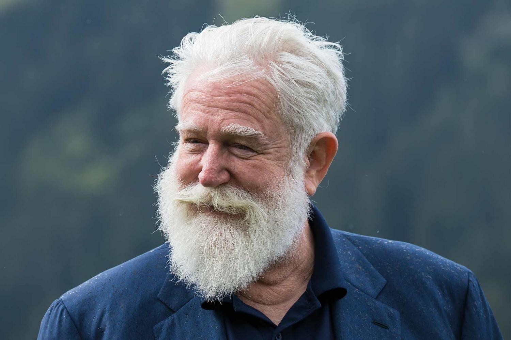

It's all about inspiration
The drive to be creative, motivated, and to stay wonderfully curious is not always easy to do. So I look to other art forms as well as other people to help me stay on my toes.
Meet Iddris Sandu
Iddris Sandu is a young man who is inspiring young people to go into STEM and shows the power of hard work and dedication. He has a taste for good design and a love for empowering the youth. Iddris has created algorithms for Instagram and snapchat and has even consulted for Twitter. And that's only a small portion of his achievements. Did I mention he is only 21 years old??
Meet James Turrell
He experiments with light and space as his medium. His exhibitions are interactive installations, completely immersing the viewer in his art. You can find some of his work at the Museum of Contemporary Art in Massachusetts as well as throughout the rest of the world. His biggest project to date is the Roden Crater and is currently being worked on in Arizona. If you ever have the chance to go see some of his work then I implore you to do so, it truly is life changing.